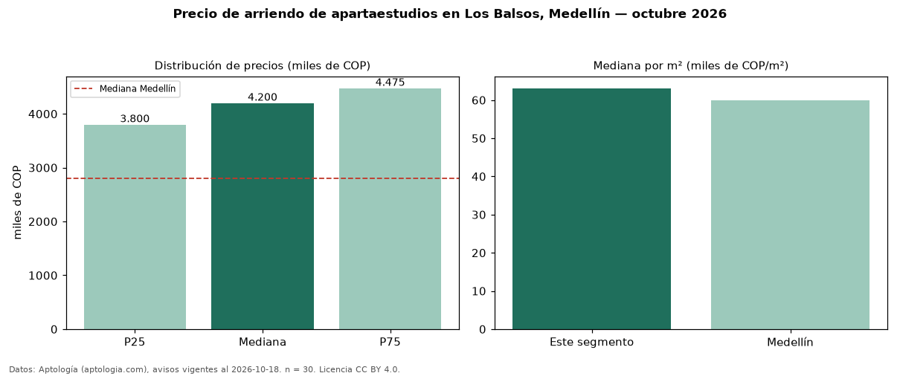

Precio de arriendo de apartaestudios en Los Balsos, Medellín — octubre 2026
En Los Balsos, Medellín, la mediana de canon mensual de apartaestudios es COP 4,20 millones, según 30 avisos vigentes. Eso es 50 % por encima de la mediana de Medellín para apartaestudios (COP 2,80 millones). Por metro cuadrado, la mediana es COP 63.089/m² al mes (n = 30 avisos con área), 5 % por encima de Medellín (COP 60.000/m²). El área mediana anunciada es 67 m². Por precio mediano es el puesto 2 de 9 barrios de Medellín con al menos 30 avisos de apartaestudios en arriendo (COP): en la franja media. El estrato más frecuente es 6 (77 % de los avisos con estrato). La mitad central de los avisos va de COP 3,80 millones a COP 4,47 millones (razón 1,2), una dispersión baja. Datos: Aptología (aptologia.com), CC BY 4.0 — https://www.aptologia.com/apartaestudios/medellin/los-balsos. Archivos: PDF, CSV con las cifras y gráfica PNG.

| Avisos únicos | 30 |
|---|---|
| Percentil 25 | COP 3.800.000 |
| Mediana | COP 4.200.000 |
| Percentil 75 | COP 4.475.000 |
| Mediana por m² | COP 63.089 |
Fuente: avisos vigentes de portales inmobiliarios recopilados por Aptología, deduplicados (mínimo 30 avisos únicos por celda). Precios pedidos, no cerrados. Fecha: 2026-10-18.